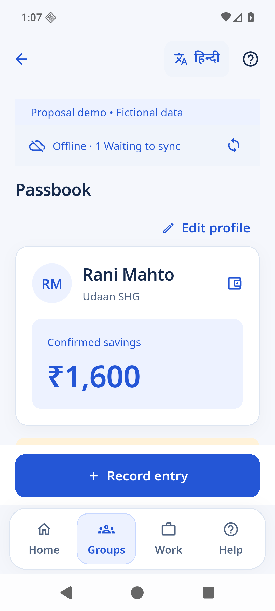
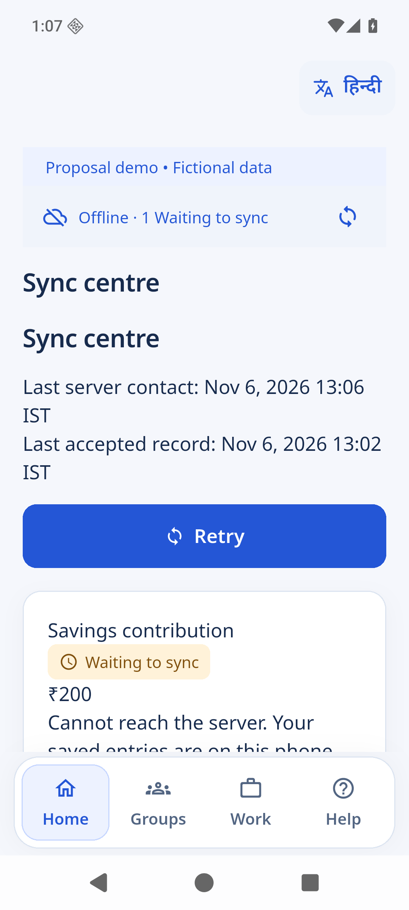

RegistrationMEMBER RECORDS
TRICKLE UP / PoP 2.0
A field-to-programme platform
Field journeys · programme oversight
One clearer view of livelihoods.
A proposed digital platform for women’s livelihoods and the teams who support them.
LOCAL PROTOTYPE · FICTIONAL RECORDS

TRICKLE UP / PoP 2.0
01 — Sakhi field app
Designed for field work
A member’s story, ready at a glance.
Open a passbook, review a contribution, and keep confirmed savings separate from pending activity.
✓Member passbook
✓Contribution review
✓Offline-first workflow
TRICKLE UP / PoP 2.0
02 — Offline, restart, reconcile
A durable transaction path
One retry. One receipt. One posting.
A contribution stays pending offline, survives a restart, then confirms once when retried.
₹1,600 + ₹200 → ₹1,800
ILLUSTRATIVE AMOUNTS · FICTIONAL MEMBER01SAVED OFFLINE

02REOPENED

03 CONFIRMED ONCE
CONFIRMED ONCE
TRICKLE UP / PoP 2.0
03 — Programme web portal
Programme oversight
From group activity to action.
Teams can review savings, follow group activity, and read reports with snapshot context in view.
✓Programme overview
✓Reports and access settings
OVERVIEW · SAVINGSREPORTS · GROUP ACTIVITYACCESS · ROLE BASED
TRICKLE UP / PoP 2.0
04 — Phase One scope
Proposed delivery scope
Core programme work, connected.
Five Phase One modules support field operations and programme monitoring.
VOICE + CHATBOT · PLANNED REQUIREMENTS
A LIVE AI SERVICE IS NOT SHOWN.SHG managementGROUP OPERATIONS
Group financeSAVINGS + LOANS
Enterprise managementLIVELIHOOD ACTIVITY
Smart Sakhi monitoringFIELD SUPPORT + FOLLOW-UP
TRICKLE UP / PoP 2.0
05 — Next steps
A clear path to field validation
Ready for the next conversation.
Agree rules, provision TUIF’s environment, review languages, and validate with field users.
PROTOTYPE · NOT PRODUCTION
FlutterMOBILE + WEB
→Node.jsPROPOSED SERVICES
→TUIF AWSENVIRONMENT PENDING
ALL RECORDS SHOWN ARE FICTIONAL · LOCAL DEPLOYMENT · NOT PRODUCTION ACCEPTANCE